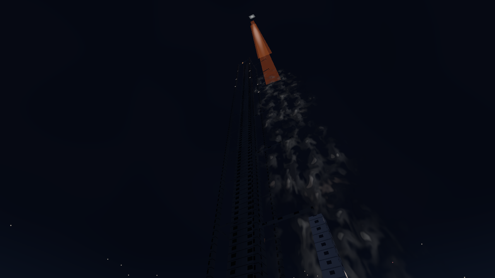
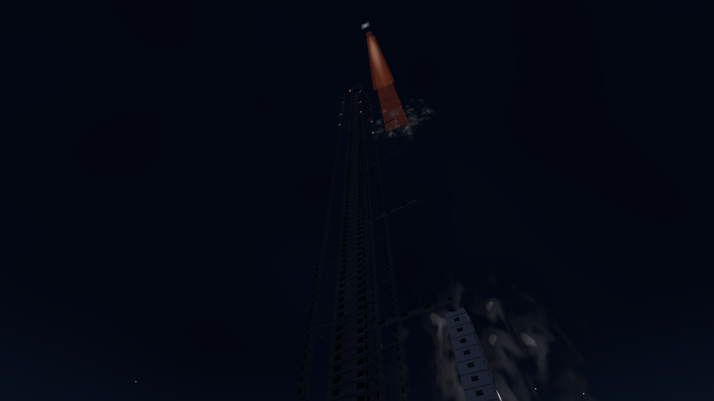
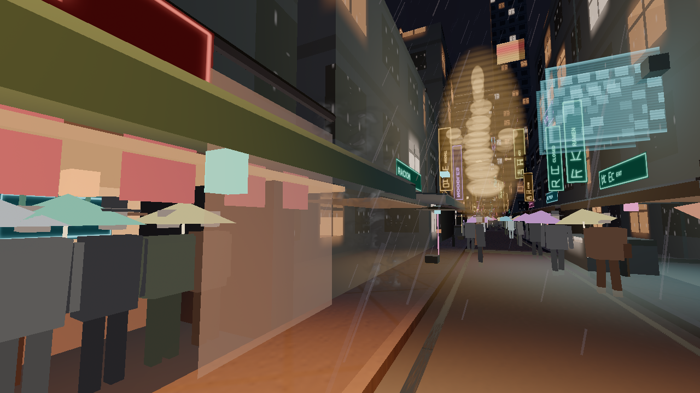

Smoke and steam, K1
Wind-driven smoke and steam for the night city: the LAX launch plume, barrel fires, refinery stacks, street vents, manholes, rooftop vents, food-stall steam, and vehicle exhaust. A person is 1.80 m. A vent is a few metres. The launch cloud is hundreds of metres.
Graphics tier is how the plume is drawn. The memory budget is how much stays resident. Ultra stays selectable on a phone and does not allocate the ultra particle buffer on a low device. Rules: MEMORY-RULES.html.
What is in the picture
Nothing from this pass. Billboard cards, the ray-marched prototypes, and the lit soft shells are all behind flags in src/fx/smoke/flags.ts, and every flag is off. A poor still does not go into the city. The flame ribbon in launch.ts is unchanged. Kit steam gain stays 0. The survey those shells were built from is smoke-research.md.
The volume code is still in the repo. It is an original march, not a copied shader and not a downloaded flipbook.
- Launch. One box around the pad. The fragment marches a finite vertical cylinder, Beer–Lambert, one low-frequency noise tap per step, one in-scatter sample per ray. Steps are 3 / 4 / 5 / 6 by tier. The sheath was meant to be the body. On the burn camera it read as a searchlight.
- Manhole and exhaust. One instanced unit box and one material. A sheet or a wake, entered on the front face and stopped at the scene depth. The market frame did not show steam the critics would count. The avenue wakes read as lamps.
- Vent, roof, stall, barrel, and stack were never converted. Their cards stay off.
Wind, rain, light, scale
The card field still implements the behaviour below. It is not drawn. The launch practicals are written only while the launch volume flag is on, so they are not in the city either.
Every puff shares Weather.windDir and params.wind. Horizontal velocity approaches wind × scale × shear with the existing drag time constant, then it is clamped to the weather wind so a stack cannot run away from its flare. Scales: roof 0.5, manhole 0.45, vent 0.35, stall 0.3, stack 0.22, barrel 0.2, exhaust 0.15, pad cloud 0.04. The launch column scale is 0. It leans with plumeLean, the same family as the flame ribbon. Curl noise (Bridson, Hourihan, Nordenstam, SIGGRAPH 2007) is the local roll on top of that target. Rain cuts loft, adds a sideways push, and shortens life. Street cards that hit a solid are aged out. Barrel, stack, and roof cards may lift onto a roof. The launch skips building tests; it is an open apron. Breath discs use the same wind at 0.08 of the weather speed and skip a cell within 5 m of a vent, manhole, or stall.
columnRadius is about 22–46 m, so the sheath sits with the 60 m LAX street. Cards are a fraction of that radius. Hot cards stay at 0.16 of the radius. The ground ring is around the pad, not chosen from the camera. The additive ribbon in launch.ts uses the 1800 K flare chromaticity, and the head stays hot white. The two launch practicals are pad-scale (8000 cd / 64 m and 2500 cd / 48 m).
Unlit steam is the fog colour times the albedo at a small coefficient. It is not multiplied by authoredLiftU, so a dark grate does not glow like a window. practicalLit and practicalInscatter supply the nits, including the low-tier 34 m bake. The flat sodium hint is gone. Soot and the launch sheath add a few nits of grey, under an 18-nit window, so a stack and a pad cloud still read where no lamp reaches. Barrel and launch flares are flare practicals through setEphemeral. A crease darkens the valleys of a card. Soft particles follow the NVIDIA SDK 10 depth fade, and an empty depth buffer does not delete the field.
Cards thin with distance. The atlas is one texture, not an uncompressed copy beside a KTX2. Particle buffers and the billboard geometry are allocated for the tier that is showing, and rebuilt when the tier changes. The constructor starts at the low cap.
Tiers
While a volume flag is on, the launch march is 3, 4, 5, and 6 samples and a street puff is 3, 4, 4, and 5. The loops are fixed at six and five. Extra taps are masked. One noise octave. With the flags off, none of those draws are built, so a low device does not compile them. Card buffers stay unallocated for the same reason. npm run memory:check passes. The stray “round 10 fixture” note is older than this pass.
Research
The implementations are original. The formulas are the public ones.
- NVIDIA SDK 10, Soft Particles (2007). Depth fade so a card does not cut a wall. SoftParticles_hi.pdf
- Bridson, Hourihan, Nordenstam, “Curl-Noise for Procedural Fluid Flow”, SIGGRAPH 2007. bridson-siggraph2007-curlnoise.pdf
- Umenhoffer, Szirmay-Kalos et al., spherical billboards, ShaderX. explosionShaderX.pdf
- Schneider, “The Real-Time Volumetric Cloudscapes of Horizon Zero Dawn”, SIGGRAPH 2015. The march is a noise field in a box, not a copy of that shader.
- Nelson Max, “Optical Models for Direct Volume Rendering”, IEEE TVCG 1995. Beer–Lambert extinction along the ray.
- Henyey–Greenstein phase, the same g = 0.42 the street haze already uses in the lighting pass. No Filament, Frostbite, or three.js shader was copied.
- three.js r186 TSL:
viewportDepthTexture,perspectiveDepthToViewZ,practicalLit.
Stills
These four frames are the volume prototypes the critics scored. They are not what the city draws now. 1280×720, night. The golden bulb ladder in the market frame is a neon sign. The orange shape on the launch is the existing flame ribbon.


Critics
Two fresh readers each round, neither of whom wrote the smoke. One compared stills with night launch photos, street steam, a chimney, and stall steam kept outside git. One scored scale against the 1.80 m person, wind, lighting-registry use, and tier caps. Scores are out of 10. A high score means the still could sit beside the reference. Lighting-registry and tier-cap checks passed on the later rounds. The numbers below are the harsh reads, not a target.
| Effect | R1 | R2 | R3 | R4 | R5 | R6 | R7 |
|---|---|---|---|---|---|---|---|
| Launch | 3 / 4 | 2 / 3 | 4 / 4 | 3 / 5 | 4 / 6 | 2 / 4 | 4 / 3 |
| Barrel | 3 / 5 | 3 / 7 | 3 / 5 | 4 / 5 | 5 / 7 | 4 / 2 | 3 / 6 |
| Stack | 5 / 6 | 3 / 4 | 5 / 6 | 5 / 7 | 4 / 7 | 3 / 3 | 2 / 5 |
| Street vent | 3 / 4 | 2 / 5 | 4 / 4 | 4 / 3 | 3 / 6 | 3 / 5 | 3 / 4 |
| Manhole | 2 / 4 | 4 / 4 | 4 / 5 | 3 / 5 | 4 / 5 | 2 / 4 | 2 / 5 |
| Roof | 2 / 3 | 3 / 6 | 4 / 5 | 5 / 5 | 5 / 7 | 3 / 3 | 3 / 4 |
| Stall | 2 / 4 | 4 / 7 | 4 / 5 | 5 / 7 | 3 / 6 | 2 / 5 | 2 / 5 |
| Exhaust | 2 / 3 | 3 / 4 | 3 / 4 | 3 / 5 | 3 / 6 | 3 / 4 | 2 / 4 |
Each cell is realism, then technical. Round 5 was the strongest early technical read (barrel, stack, and roof at 7). Later rounds that tore the stamps into spheres, or ate the rims until the column vanished, scored lower.
A separate film read on 12 October, from code only and before these stills, was 4/10. The fixes after that read are the street-width sheath, wind as a target speed, the 1800 K ribbon, steam without authoredLiftU, and a low tier that draws the pad cloud. Three fresh rounds then scored the pictures. Cells are realism, technical, then the film score.
| Effect | Round 9 | Round 10 | Round 11 (these stills) |
|---|---|---|---|
| Launch | 4 / 4 / 4 | 4 / 3 / 4 | 4 / 4 / 5 |
| Barrel | 4 / 3 / 6 | 3 / 5 / 5 | 4 / 5 / 5 |
| Stack | 3 / 5 / 5 | 3 / 3 / 2 | 5 / 5 / 4 |
| Street vent | 3 / 4 / 5 | 4 / 4 / 4 | 4 / 3 / 3 |
| Manhole | 3 / 4 / 4 | 2 / 3 / 3 | 3 / 4 / 2 |
| Roof | 3 / 5 / 4 | 3 / 4 / 5 | 4 / 4 / 6 |
| Stall | 3 / 3 / 5 | 2 / 2 / 1 | 3 / 3 / 4 |
| Exhaust | 3 / 3 / 4 | 3 / 3 / 3 | 3 / 3 / 4 |
Film overall on the three picture rounds: 4, 3, then 4. Lighting-registry and tier caps passed on each of those technical reads. Nothing in round 11 cleared 7.
Round 12 is the stills on this page, read again by three fresh critics (realism, technical, film). Cells are realism, technical, then film. The golden bulb ladder was named as a sign before they scored.
| Effect | Round 12 (these stills) |
|---|---|
| Launch | 4 / 5 / 5 |
| Launch low | 4 / 3 / 2 |
| Street vent | 3 / 3 / 3 |
| Manhole | 1 / 3 / 2 |
| Stack | 3 / 5 / 2 |
| Barrel | 2 / 6 / 3 |
| Stall | 4 / 4 / 3 |
| Roof | 2 / 4 / 2 |
| Exhaust | 1 / 3 / 1 |
Overall on the card stills: realism 3, technical 4, film 3. Nothing in round 12 cleared 7. Those card frames are not the pictures above.
Volume critics
Three fresh readers scored the four frames on this page. Cells are realism, technical, then film. They were not given a target. The golden bulb ladder was named as a sign. The orange launch shape was named as the existing flame.
| Effect | Realism | Technical | Film |
|---|---|---|---|
| Launch, ultra | 2 | 8 | 4 |
| Launch, low | 1 | 7 | 1 |
| Manhole | 1 | 2 | 1 |
| Exhaust | 2 | 2 | 1 |
Overall: realism 2, technical did not give one number for the set (lighting 8, tier step-down 7, on the launch pair alone), film 2. The technical reader scored a small cap at the nozzle and called the cone a spotlight. Film and realism scored that cone as the smoke, and both refused it. No effect cleared 7 with all three. All three volume flags are off, and the card flag stays off.
Shell critics
After the volume pass, the survey recommended lit soft shells for the launch and the manhole: a few veils, three octaves of value noise, a curl offset, a density-gradient shade, premultiplied grey, and a depth fade. No downloaded art and no copied shader. The stills below were shot with ?smoke=shell. The city flags stayed off. Cells are realism, technical, then film. The readers were not given a target. The golden bulb ladder was named as a sign. The orange shape was named as the existing flame.



| Effect | Realism | Technical | Film |
|---|---|---|---|
| Launch, ultra | 4 | 6 | 4 |
| Launch, low | 3 | 4 | 2 |
| Manhole | 0 | 0 | 0 |
Overall: realism 2, technical 3, film 2. The ultra plume was read as stacked soft clumps with a repeated noise stamp, cool grey beside the flame. The low frame split into two patches. No reader found street steam. No effect cleared 7 with all three, so SMOKE_LAUNCH_SHELL and SMOKE_MANHOLE_SHELL stay off. Exhaust, vent, and stack were not built.
Where to look
In the city as shipped, do not look for this pass. The launch flame is the ribbon that was already there. The market’s golden ladder is a sign. The avenue’s white pools are headlights and lamps.